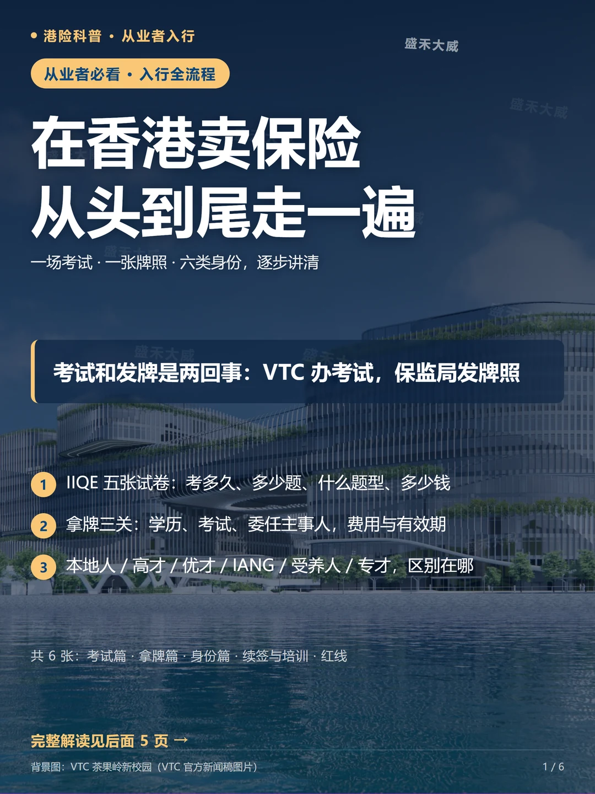
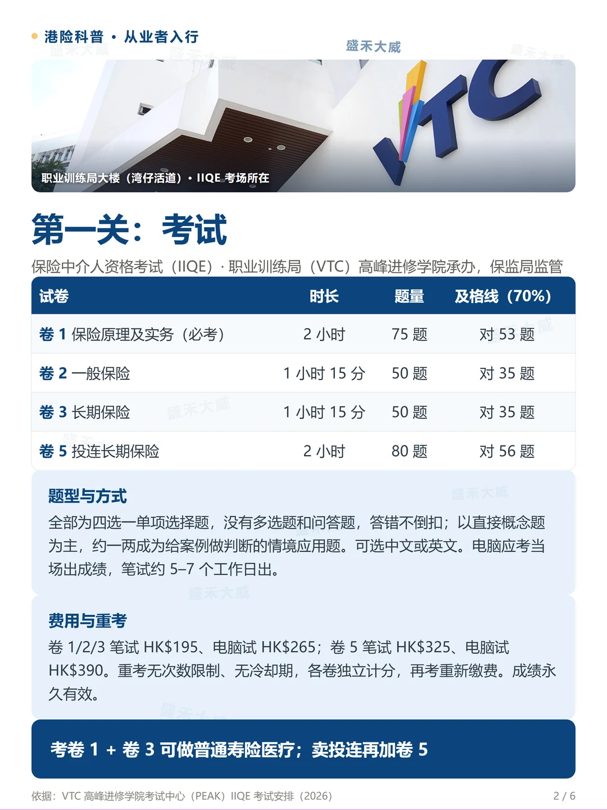
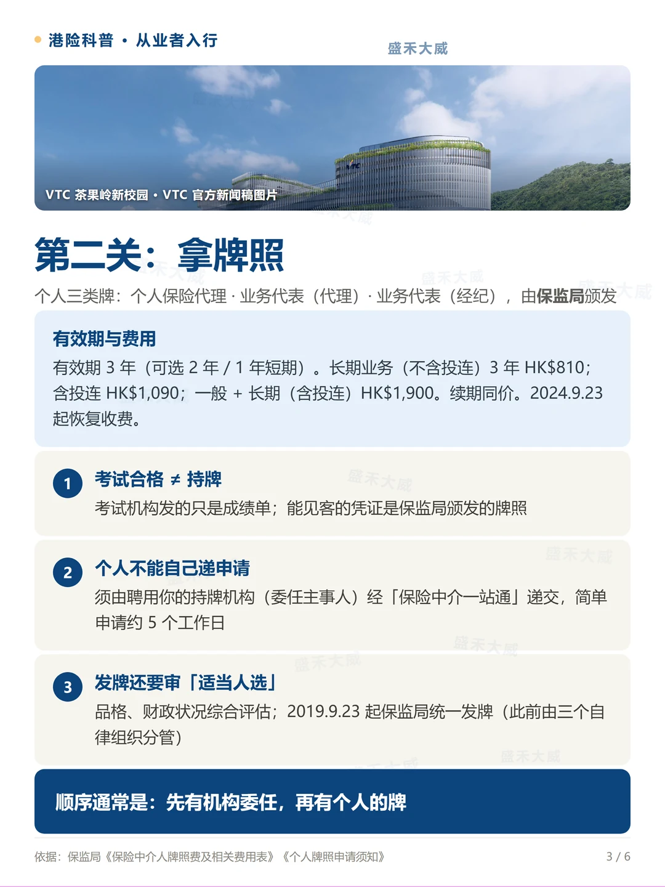
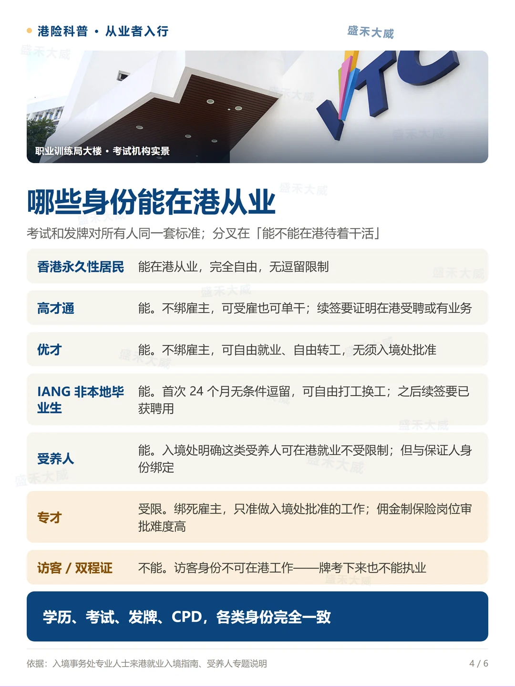
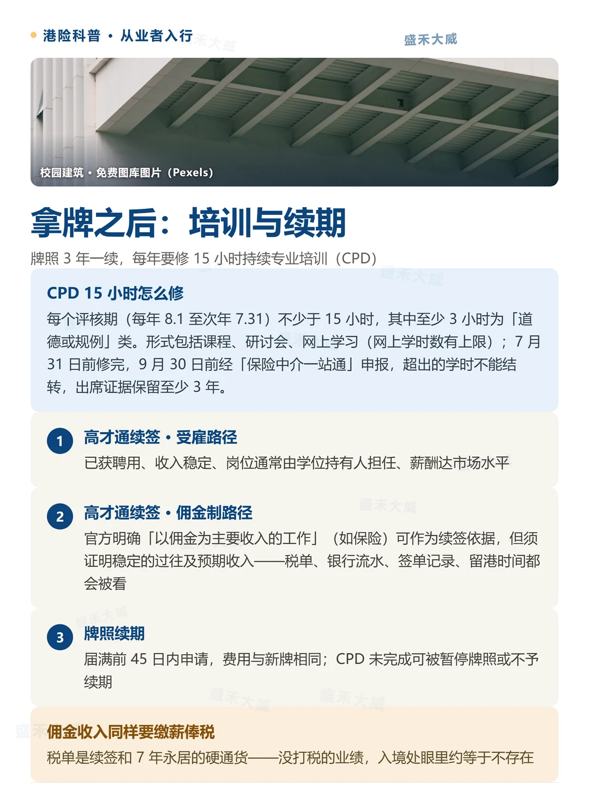
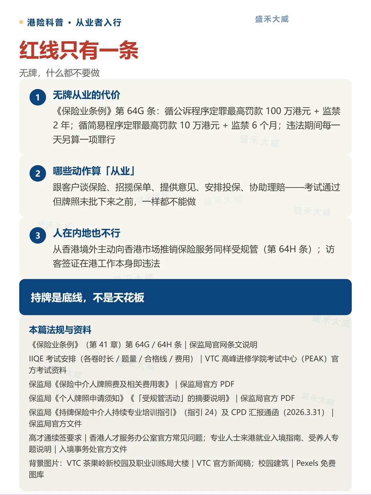

内地身份想入行香港保险，最容易被「考试」和「牌照」两件事绕晕。这篇按顺序讲清：考什么试、拿什么牌、各类身份能不能从业、拿牌之后每年要做什么，以及一条碰不得的红线。零基础可读，不预设读者知道任何行业名词。 Planning to sell insurance in Hong Kong? This guide walks through the two things people mix up most — the qualifying exam and the licence — plus which residency statuses let you actually work, what you must do every year after licensing, and the one red line you cannot cross. No prior industry knowledge assumed.
保险中介人资格考试（Insurance Intermediary Qualifying Examination，IIQE）由 VTC 职业训练局高峰进修学院考试中心（PEAK）承办、保监局监管，面向公众开放。四张试卷按业务范围选考： The Insurance Intermediary Qualifying Examination (IIQE) is run by VTC's Peak exam centre under the Insurance Authority's oversight and is open to the public. Four papers, chosen by business line:
| 试卷 Paper | 时长 | 题量 | 及格线（70%） | 笔试费 | 电脑试 |
|---|---|---|---|---|---|
| 卷 1 保险原理及实务（必考） | 2 小时 | 75 题 | 对 53 题 | HK$195 | HK$265 |
| 卷 2 一般保险 | 1 小时 15 分 | 50 题 | 对 35 题 | HK$195 | HK$265 |
| 卷 3 长期保险 | 1 小时 15 分 | 50 题 | 对 35 题 | HK$195 | HK$265 |
| 卷 5 投连长期保险 | 2 小时 | 80 题 | 对 56 题 | HK$325 | HK$390 |
组合上，考「卷 1 + 卷 3」可以做普通寿险和医疗险；要卖投连产品，再加卷 5。 Paper 1 plus Paper 3 covers ordinary life and medical business; selling investment-linked policies adds Paper 5.
题型与方式：全部为四选一单项选择题，没有多选题和问答题，答错不倒扣。题目以直接概念题为主，约一两成为给案例做判断的情境应用题。可选中文或英文应考。电脑应考当场出成绩，笔试约 5–7 个工作日出。 Format: every question is a four-option multiple-choice item — no multi-select, no essay, no penalty for wrong answers. Most items test concepts directly; roughly one or two in ten are scenario-based judgement questions. You may sit in Chinese or English. Computer-based tests give results on the spot; written papers take about 5–7 working days.
费用与重考：卷 1/2/3 笔试 HK$195、电脑试 HK$265；卷 5 笔试 HK$325、电脑试 HK$390。重考没有次数限制、不设冷却期，各卷独立计分，再考重新缴费。成绩永久有效。 Fees and retakes: Papers 1/2/3 cost HK$195 (written) or HK$265 (computer-based); Paper 5 costs HK$325 / HK$390. Retakes are unlimited with no waiting period; each paper is scored independently and you pay again to resit. Pass results never expire.
个人可以拿的牌有三类：个人保险代理、业务代表（代理）、业务代表（经纪）。自 2019 年 9 月 23 日起统一由保监局颁发（此前由三个自律组织分管）。有效期 3 年，也可选 2 年或 1 年短期；2024 年 9 月 23 日起恢复收费，续期同价。 Individuals hold one of three licence types: individual insurance agent, technical representative (agent), or technical representative (broker). Since 23 September 2019 all are issued by the Insurance Authority, which took over from the three self-regulatory organisations. Licences run for three years (two-year and one-year short options available); fees resumed on 23 September 2024 and renewals cost the same.
| 牌照类别 Licence class | 3 年费用 |
|---|---|
| 长期业务（不含投连） | HK$810 |
| 长期业务（含投连） | HK$1,090 |
| 一般 + 长期（含投连） | HK$1,900 |
顺序通常是：先有机构委任，再有个人的牌。 The usual order: an institution appoints you first, then your personal licence follows.
考试和发牌对所有人同一套标准——香港永久性居民、高才通、优才、专才、IANG、受养人，考的卷、交的钱、拿的牌完全一样。真正的分叉在「能不能在港待着干活」： Exam and licensing standards are identical for everyone — permanent residents, Top Talent Pass, QMAS, ASMTP, IANG and dependants all sit the same papers, pay the same fees and hold the same licences. The real fork is whether you may actually stay and work in Hong Kong:
| 身份 Status | 能否在港从业 | 关键限制 Key constraint |
|---|---|---|
| 香港永久性居民 | 能 | 完全自由，无逗留限制 |
| 高才通（高端人才通行证计划） | 能 | 不绑雇主，可受雇也可单干；续签要证明在港受聘或有业务 |
| 优才（优秀人才入境计划） | 能 | 不绑雇主，可自由就业、自由转工，无须入境处批准 |
| IANG 非本地毕业生 | 能 | 首次 24 个月无条件逗留，可自由打工换工；之后续签要已获聘用 |
| 受养人（高才 / 优才 / 专才 / IANG 家属） | 能 | 入境处明确这类受养人可在港就业不受限制；但与保证人身份绑定 |
| 专才（输入内地人才计划） | 受限 | 绑死雇主，只准做入境处批准的工作；佣金制保险岗位审批难度高 |
| 访客 / 双程证 | 不能 | 访客身份不可在港工作——牌考下来也不能执业 |
一句话：学历、考试、发牌、CPD，各类身份完全一致；差异全在逗留与续签。 In short: education, exams, licensing and CPD are identical across all statuses — the differences sit entirely in residency and renewal.
牌照 3 年一续，但每年都有硬任务：持续专业培训（CPD）。每个评核期为每年 8 月 1 日至次年 7 月 31 日，须修满不少于 15 小时，其中至少 3 小时为「道德或规例」类。形式包括课程、研讨会、网上学习（网上学时数有上限）；7 月 31 日前修完，9 月 30 日前经「保险中介一站通」申报；超出的学时不能结转，出席证据须保留至少 3 年。 The licence renews every three years, but there is a hard annual task: continuing professional development (CPD). Each assessment period runs from 1 August to the following 31 July and requires at least 15 hours, of which at least 3 must be ethics-or-regulation content. Formats include courses, seminars and e-learning (with a cap on e-learning hours); complete by 31 July and report via the Insurance Intermediaries One-Stop Portal by 30 September. Surplus hours do not carry over, and attendance records must be kept for at least 3 years.
高才通续签 · 佣金制路径：官方明确「以佣金为主要收入的工作」（如保险）可作为续签依据，但须证明稳定的过往及预期收入——税单、银行流水、签单记录、留港时间都会被入境处看。佣金收入同样要缴薪俸税：税单是续签和 7 年永居的硬通货，没打税的业绩，入境处眼里约等于不存在。 Top Talent Pass renewal via the commission route: official guidance expressly recognises "work remunerated mainly by commission" (such as insurance) as a basis for renewal, provided you can show stable past and expected income — tax bills, bank statements, policy records and time spent in Hong Kong are all examined. Commission income is subject to salaries tax: the tax bill is the hard currency of both renewal and the 7-year permanent-residency path. Untaxed performance may as well not exist in the Immigration Department's eyes.
牌照续期：届满前 45 日内申请，费用与新牌相同；CPD 未完成可被暂停牌照或不予续期。 Licence renewal: apply within 45 days before expiry at the same fee as a new licence; incomplete CPD can lead to suspension or refusal of renewal.
无牌，什么都不要做。《保险业条例》第 64G 条：循公诉程序定罪，最高罚款 100 万港元 + 监禁 2 年；循简易程序定罪，最高罚款 10 万港元 + 监禁 6 个月；违法期间每一天另算一项罪行。 Do nothing without a licence. Section 64G of the Insurance Ordinance: on indictment, up to HK$1,000,000 fine plus 2 years' imprisonment; on summary conviction, up to HK$100,000 plus 6 months. Each day of the offence counts separately.
哪些动作算「从业」：跟客户谈保险、招揽保单、提供意见、安排投保、协助理赔——考试通过但牌照未批下来之前，一样都不能做。从香港境外主动向香港市场推销保险服务同样受规管（第 64H 条）；访客签证在港工作本身即违法。 What counts as "carrying on regulated activities": discussing insurance with clients, soliciting policies, giving advice, arranging cover, assisting claims — none of it is permitted between passing the exam and having the licence issued. Actively promoting insurance services into the Hong Kong market from outside Hong Kong is also regulated (section 64H), and working in Hong Kong on a visitor visa is itself unlawful.
持牌是底线，不是天花板。 A licence is the floor, not the ceiling.
本篇的小红书图文版共 6 张，按「封面 → 考试 → 拿牌 → 身份 → 培训续期 → 红线与来源」排列，可点击下载原图。 The social-media card version of this guide, six cards in total, arranged as cover → exam → licence → residency → CPD & renewal → red line & sources. Click to download the originals.





